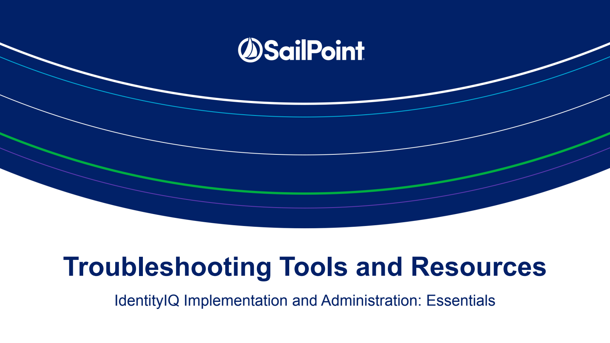
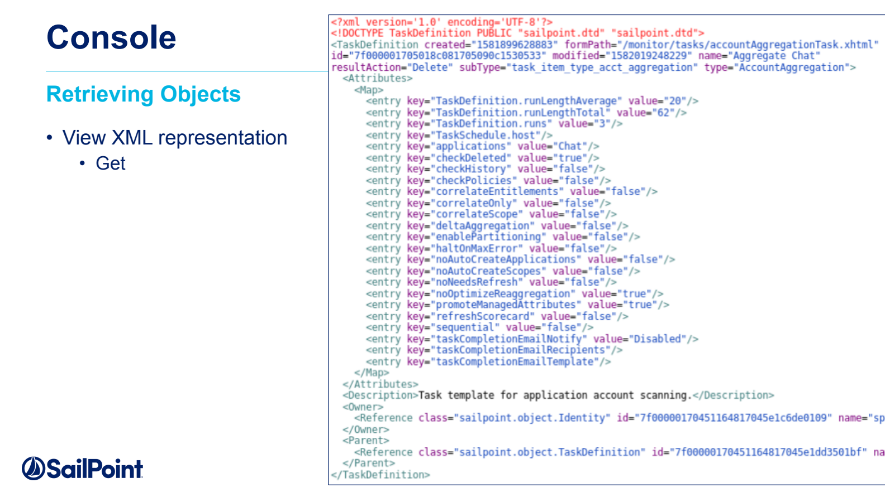
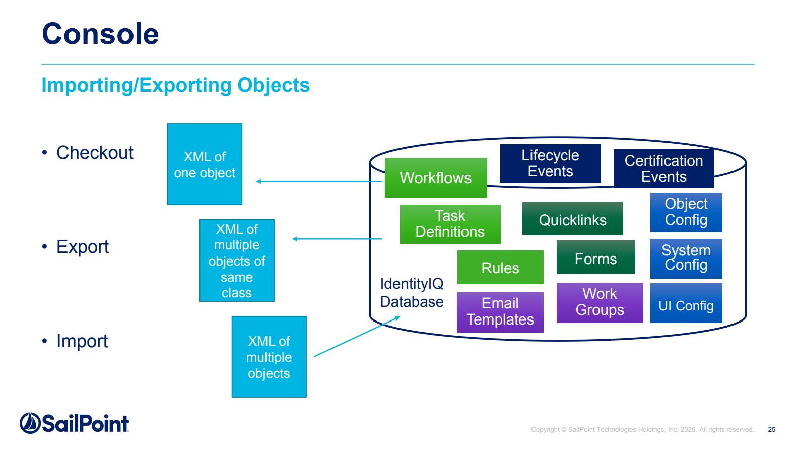
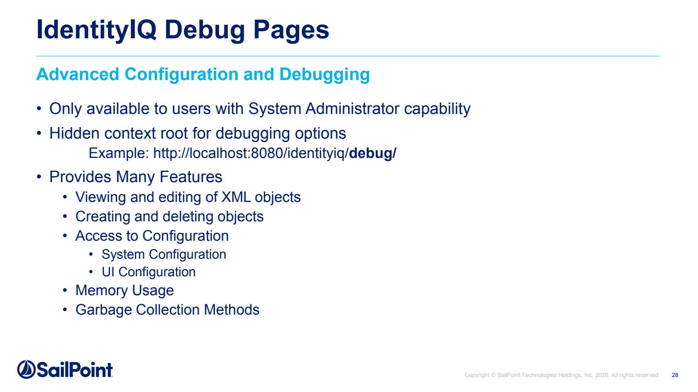
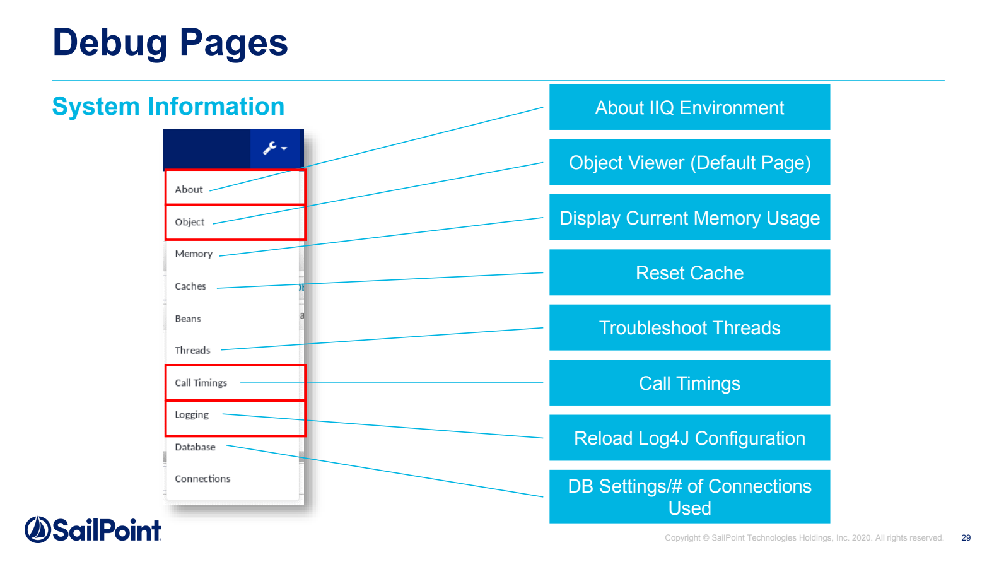
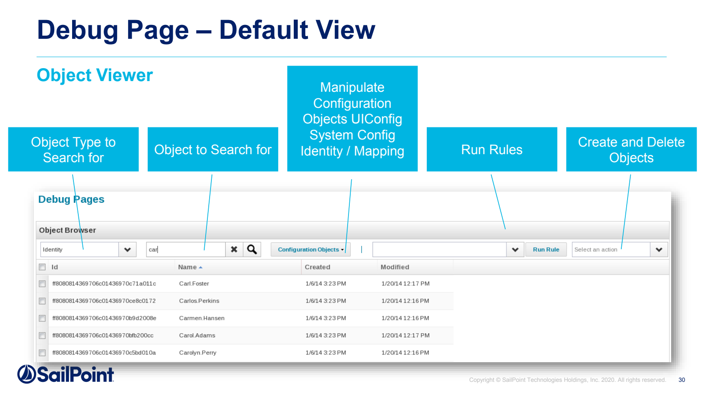
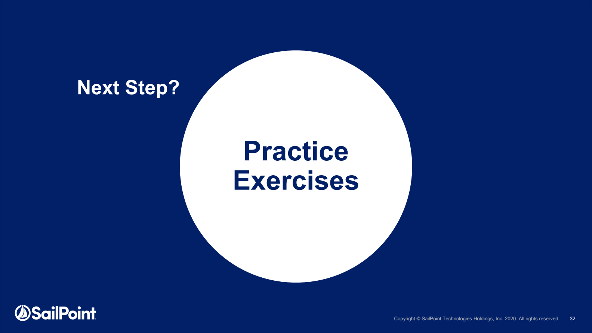
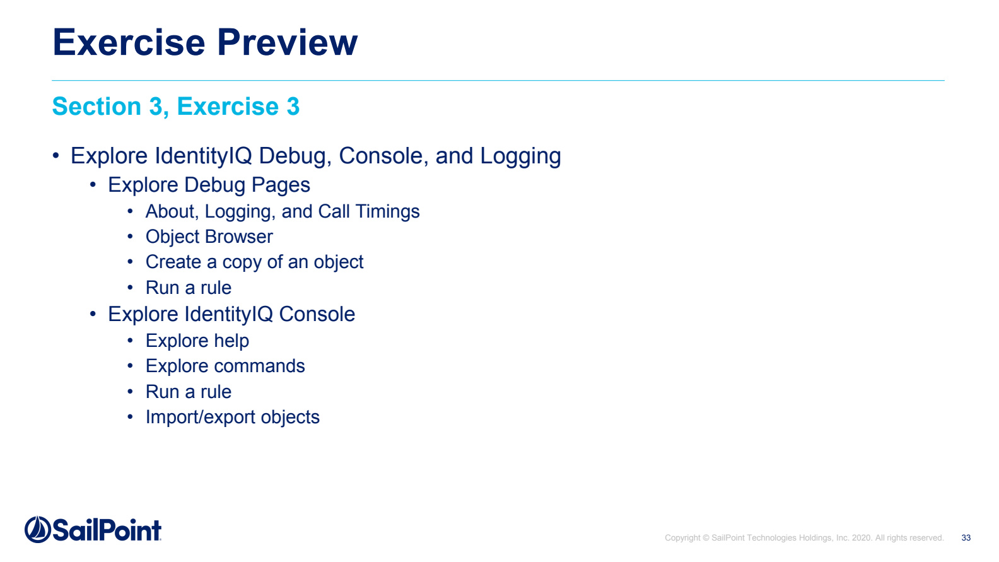

All Essentials modules · Practice companion
17. Troubleshooting
Work methodically across the environment
The lesson emphasizes detailed observations, product familiarity, repeatable tests and changing one variable at a time. The database, Java runtime, application server, network and connected systems all participate in IdentityIQ behavior. A failed operation is not automatically a defect in IdentityIQ code.
Record the expected result, actual result, affected object and time. Reproduce the smallest useful example, inspect the relevant evidence and validate a single change. This study sequence synthesizes the troubleshooting principles on the original slide.



Console and XML objects
The IdentityIQ Console connects to the database independently of the browser UI. Its commands can list/count objects, retrieve their XML, run rules or tasks, test connectors and export/import definitions. The lesson presents authentication behavior specific to its training build; the notes do not recommend relying on an initial default administrator credential.
Checkout/export/import operate on object definitions. When moving definitions between instances, the course highlights clean exports and the import noid option to avoid carrying instance-specific identifiers and timestamps as though they were portable business configuration. Use the appropriate command syntax from the guide rather than guessing from an abbreviated example.






Debug Pages
The course's administrator-only Debug Pages expose the object browser, system information, memory and threads, cache-related functions, call timings, logging reload and database-connection information. Object XML is powerful: a screen that can view an object may also allow a modification or deletion.
Exercise 3.3 examines these views, creates a separately named training rule from an existing definition, tests it, and explores Console help and object export/import. Its deletion demonstration first cancels a UI deletion before later using the Console exercise command. These instructions are preserved as study material; no object was modified, deleted or run on the user's systems.






Related practice and source pages
Section Three — overview and contents · Exercise 3.3 — Debug and Console · Appendix — synonyms, Linux, installation and lab tools